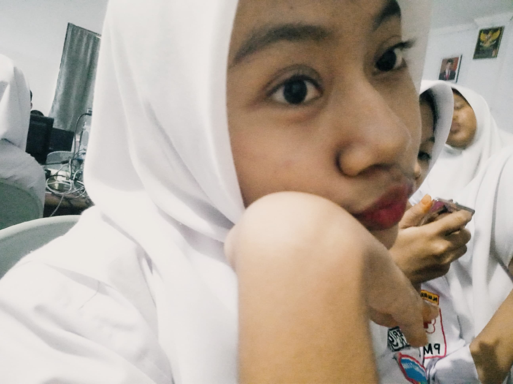

Personal
Dafina Khansa Nawar adalah seorang individu yang lahir dan besar di kota yang berwarna dan bersejarah, Kota Medan. Sebagai anak pertama dari dua bersaudara, Khansa tumbuh dalam lingkungan keluarga yang penuh kasih dan memberikan dukungan tak tergantung bagi ambisi dan minatnya.Sejak kecil, ia hanyalah sosok anak yang lemah daan dipaksa agar tetap kuat. Dia selalu merasa tertarik untuk mengetahui lebih banyak tentang berbagai hal. Ketertarikannya terhadap pembelajaran memuncak ketika dia memasuki dunia pendidikan formal.
Sebagai seorang murid di jurusan Rekayasa Perangkat Lunak (RPL), Khansa menjadikan pendidikan sebagai panggilan hidupnya. Dia menganggap setiap hari sebagai kesempatan untuk memberikan pengaruh positif pada kehidupan teman-temannya. Khansa belajar sedikit demi sedikit untuk sukses di dunia nyata. Keinginannya untuk terus belajar dan berkembang menginspirasi teman-teman untuk melakukan hal yang sama. Di luar jam sekolah, Khansa menemukan kedamaian dan kegembiraan dengan mendengarkan lagu atau menggambar untuk menghilangkan stresnya. Hobi ini bukan hanya hiburan baginya, tetapi juga merupakan sarana untuk menambah ilmu wawasan dalam menggambar.
Dengan kepribadian yang ceria dan semangat yang tak tergoyahkan, Khansa tidak akan pernah patah semangat untuk mendapatkan apapun. Dia percaya bahwa pendidikan adalah kunci untuk membuka pintu menuju masa depan yang lebih cerah dan memberdayakan teman-teman lainnya untuk mewujudkan potensi terbaik mereka. Melalui dedikasi, kerja keras, dan cinta pada pembelajaran, Dafina Khansa Nawar terus menjadi sosok yang menginspirasi dan memberikan dampak positif bagi masyarakat pendidikan di sekitarnya.